Appendix II - Design of Clubs
A player in doubt as to the conformity of a club should consult the USGA.
A manufacturer should submit to the USGA a sample of a club to be manufactured for a ruling as to whether the club conforms with the Rules. The sample becomes the property of the USGA for reference purposes. If a manufacturer fails to submit a sample or, having submitted a sample, fails to await a ruling before manufacturing and/or marketing the club, the manufacturer assumes the risk of a ruling that the club does not conform with the Rules.
The following paragraphs prescribe general regulations for the design of clubs, together with specifications and interpretations. Further information relating to these regulations and their proper interpretation is provided in "A Guide to the Rules on Clubs and Balls."
Where a club, or part of a club, is required to meet a specification within the Rules, it must be designed and manufactured with the intention of meeting that specification.
1. Clubs
a. General
A club is an implement designed to be used for striking the ball and generally comes in three forms: woods, irons and putters distinguished by shape and intended use. A putter is a club with a loft not exceeding ten degrees designed primarily for use on the putting green.
The club must not be substantially different from the traditional and customary form and make. The club must be composed of a shaft and a head and it may also have material added to the shaft to enable the player to obtain a firm hold (see 3 below). All parts of the club must be fixed so that the club is one unit, and it must have no external attachments. Exceptions may be made for attachments that do not affect the performance of the club.
b. Adjustability
All clubs may incorporate features for weight adjustment. Other forms of adjustability may also be permitted upon evaluation by the USGA. The following requirements apply to all permissible methods of adjustment:
(i) the adjustment cannot be readily made;
(ii) all adjustable parts are firmly fixed and there is no reasonable likelihood of them working loose during a round; and
(iii) all configurations of adjustment conform with the Rules.
During a stipulated round, the playing characteristics of a club must not be purposely changed by adjustment or by any other means (see Rule 4-2a).
c. Length
The overall length of the club must be at least 18 inches (0.457 m) and, except for putters, must not exceed 48 inches (1.219 m).
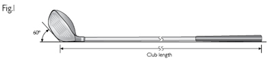
For woods and irons, the measurement of length is taken when the club is lying on a horizontal plane and the sole is set against a 60 degree plane as shown in Fig. I. The length is defined as the distance from the point of the intersection between the two planes to the top of the grip. For putters, the measurement of length is taken from the top of the grip along the axis of the shaft or a straight line extension of it to the sole of the club.
d. Alignment
When the club is in its normal address position the shaft must be so aligned that:
(i) the projection of the straight part of the shaft on to the vertical plane through the toe and heel must diverge from the vertical by at least 10 degrees (see Fig. II). If the overall design of the club is such that the player can effectively use the club in a vertical or close-to-vertical position, the shaft may be required to diverge from the vertical in this plane by as much as 25 degrees;
(ii) the projection of the straight part of the shaft on to the vertical plane along the intended line of play must not diverge from the vertical by more than 20 degrees forwards or 10 degrees backwards (see Fig. III).
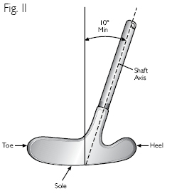
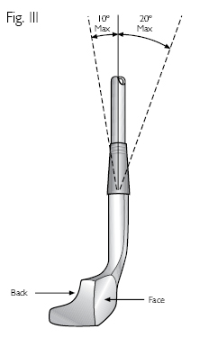
Except for putters, all of the heel portion of the club must lie within 0.625 inches (15.88 mm) of the plane containing the axis of the straight part of the shaft and the intended (horizontal) line of play (see Fig. IV).
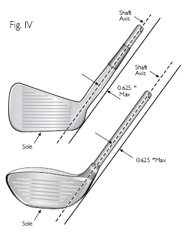
2. Shaft
a. Straightness
The shaft must be straight from the top of the grip to a point not more than 5 inches (127 mm) above the sole, measured from the point where the shaft ceases to be straight along the axis of the bent part of the shaft and the neck and/or socket (see Fig. V).
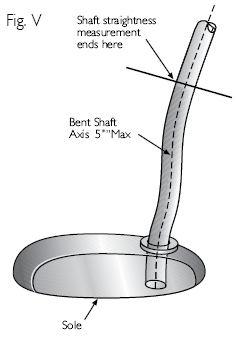
b. Bending and Twisting Properties
At any point along its length, the shaft must:
(i) bend in such a way that the deflection is the same regardless of how the shaft is rotated about its longitudinal axis; and
(ii) twist the same amount in both directions.
c. Attachment to Clubhead
The shaft must be attached to the clubhead at the heel either directly or through a single plain neck and/or socket. The length from the top of the neck and/or socket to the sole of the club must not exceed 5 inches (127 mm), measured along the axis of, and following any bend in, the neck and/or socket (see Fig. VI).
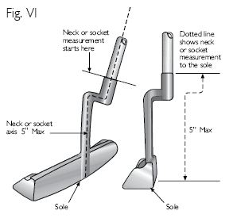
Exception for Putters: The shaft or neck or socket of a putter may be fixed at any point in the head.
3. Grip (see Fig. VII)
The grip consists of material added to the shaft to enable the player to obtain a firm hold. The grip must be fixed to the shaft, must be straight and plain in form, must extend to the end of the shaft and must not be molded for any part of the hands. If no material is added, that portion of the shaft designed to be held by the player must be considered the grip.
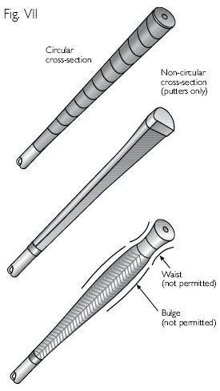
(i) For clubs other than putters the grip must be circular in cross-section, except that a continuous, straight, slightly raised rib may be incorporated along the full length of the grip, and a slightly indented spiral is permitted on a wrapped grip or a replica of one.
(ii) A putter grip may have a non-circular cross-section, provided the cross-section has no concavity, is symmetrical and remains generally similar throughout the length of the grip. (See Clause (v) overleaf).
(iii) The grip may be tapered but must not have any bulge or waist. Its cross-sectional dimensions measured in any direction must not exceed 1.75 inches (44.45 mm).
(iv) For clubs other than putters the axis of the grip must coincide with the axis of the shaft.
(v) A putter may have two grips provided each is circular in cross-section, the axis of each coincides with the axis of the shaft, and they are separated by at least 1.5 inches (38.1 mm).
4. Clubhead
a. Plain in Shape
The clubhead must be generally plain in shape. All parts must be rigid, structural in nature and functional. The clubhead or its parts must not be designed to resemble any other object. It is not practicable to define plain in shape precisely and comprehensively. However, features that are deemed to be in breach of this requirement and are therefore not permitted include, but are not limited to:
(i) All Clubs
- holes through the face;
- holes through the head (some exceptions may be made for putters and cavity back irons);
- facsimiles of golf balls or actual golf balls incorporated into the head;
- features that are for the purpose of meeting dimensional specifications;
- features that extend into or ahead of the face;
- features that extend significantly above the top line of the head;
- furrows in or runners on the head that extend into the face (some exceptions may be made for putters); and
- optical or electronic devices.
(ii) Woods and Irons
- all features listed in (i) above;
- cavities in the outline of the heel and/or the toe of the head that can be viewed from above;
- severe or multiple cavities in the outline of the back of the head that can be viewed from above;
- transparent material added to the head with the intention of rendering conforming a feature that is not otherwise permitted; and
- features that extend beyond the outline of the head when viewed from above.
b. Dimensions, Volume and Moment of Inertia
(i) Woods
When the club is in a 60 degree lie angle, the dimensions of the clubhead must be such that:
- the distance from the heel to the toe of the clubhead is greater than the distance from the face to the back;
- the distance from the heel to the toe of the clubhead is not greater than 5 inches (127 mm); and
- the distance from the sole to the crown of the clubhead, including any permitted features, is not greater than 2.8 inches (71.12 mm).
These dimensions are measured on horizontal lines between vertical projections of the outermost points of:
- the heel and the toe; and
- the face and the back (see Fig. VIII, dimension A);
and on vertical lines between the horizontal projections of the outermost points of the sole and the crown (see Fig. VIII, dimension B). If the outermost point of the heel is not clearly defined, it is deemed to be 0.875 inches (22.23 mm) above the horizontal plane on which the club is lying (see Fig. VIII, dimension C).
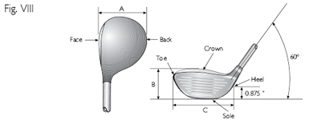
The volume of the clubhead must not exceed 460 cubic centimeters (28.06 cubic inches), plus a tolerance of 10 cubic centimeters (0.61 cubic inches).
When the club is in a 60 degree lie angle, the moment of inertia component around the vertical axis through the clubhead's center of gravity must not exceed 5900 g cm2 (32.259 oz in2), plus a test tolerance of 100 g cm2 (0.547 oz in2).
(ii) Irons
When the clubhead is in its normal address position, the dimensions of the head must be such that the distance from the heel to the toe is greater than the distance from the face to the back.
(iii) Putters (see Fig. IX)
When the clubhead is in its normal address position, the dimensions of the head must be such that:
- the distance from the heel to the toe is greater than the distance from the face to the back;
- the distance from the heel to the toe of the head is less than or equal to 7 inches (177.8 mm);
- the distance from the heel to the toe of the face is greater than or equal to two thirds of the distance from the face to the back of the head;
- the distance from the heel to the toe of the face is greater than or equal to half of the distance from the heel to the toe of the head; and
- the distance from the sole to the top of the head, including any permitted features, is less than or equal to 2.5 inches (63.5 mm).
For traditionally shaped heads, these dimensions will be measured on horizontal lines between vertical projections of the outermost points of:
- the heel and the toe of the head;
- the heel and the toe of the face; and
- the face and the back;
and on vertical lines between the horizontal projections of the outermost points of the sole and the top of the head.
For unusually shaped heads, the toe to heel dimension may be made at the face.
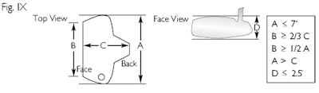
c. Spring Effect and Dynamic Properties
The design, material and/or construction of, or any treatment to, the clubhead (which includes the club face) must not:
(i) have the effect of a spring which exceeds the limit set forth in the Pendulum Test Protocol on file with the USGA; or
(ii) incorporate features or technology including, but not limited to, separate springs or spring features, that have the intent of, or the effect of, unduly influencing the clubhead's spring effect; or
(iii) unduly influence the movement of the ball.
Note: (i) above does not apply to putters.
d. Striking Faces
The clubhead must have only one striking face, except that a putter may have two such faces if their characteristics are the same, and they are opposite each other.
5. Club Face
a. General
The face of the club must be hard and rigid and must not impart significantly more or less spin to the ball than a standard steel face (some exceptions may be made for putters). Except for such markings listed below, the club face must be smooth and must not have any degree of concavity.
b. Impact Area Roughness and Material
Except for markings specified in the following paragraphs, the surface roughness within the area where impact is intended (the "impact area") must not exceed that of decorative sandblasting, or of fine milling (see Fig. X).
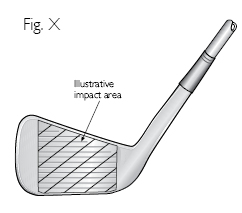
The whole of the impact area must be of the same material (exceptions may be made for clubheads made of wood).
c. Impact Area Markings
If a club has grooves and/or punch marks in the impact area they must meet the following specifications:
(i) Grooves
- Grooves must be straight and parallel.
- Grooves must have a symmetrical cross-section and have sides which do not converge (see Fig. XI).
- *For clubs that have a loft angle greater than or equal to 25 degrees, grooves must have a plain cross-section.
- The width, spacing and cross-section of the grooves must be consistent throughout the impact area (some exceptions may be made for woods).
- The width (W) of each groove must not exceed 0.035 inches (0.9 mm), using the 30 degree method of measurement on file with the USGA.
- The distance between edges of adjacent grooves (S) must not be less than three times the width of the grooves, and not less than 0.075 inches (1.905 mm).
- The depth of each groove must not exceed 0.020 inches (0.508 mm).
- *For clubs other than driving clubs, the cross-sectional area (A) of a groove divided by the groove pitch (W+S) must not exceed 0.0030 square inches per inch (0.0762 mm2/mm) (see Fig. XII).
- Grooves must not have sharp edges or raised lips.
- For clubs that have a loft angle greater than or equal to 25 degrees, groove edges must be substantially in the form of a round having an effective radius which is not less than 0.010 inches (0.254 mm) when measured as shown in Fig. XIII, and not greater than 0.020 inches (0.508 mm). Deviations in effective radius within 0.001 inches (0.0254 mm) are permissible.

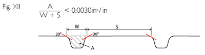
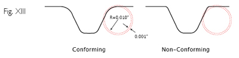
(ii) Punch Marks
- The maximum dimension of any punch mark must not exceed 0.075 inches (1.905 mm).
- The distance between adjacent punch marks (or between punch marks and grooves) must not be less than 0.168 inches (4.27 mm), measured from center to center.
- The depth of any punch mark must not exceed 0.040 inches (1.02 mm).
- Punch marks must not have sharp edges or raised lips.
- *For clubs that have a loft angle greater than or equal to 25 degrees, punch mark edges must be substantially in the form of a round having an effective radius which is not less than 0.010 inches (0.254 mm) when measured as shown in Figure XIII, and not greater than 0.020 inches (0.508 mm). Deviations in effective radius within 0.001 inches (0.0254 mm) are permissible.
Note 1: The groove and punch mark specifications above indicated by an asterisk (*) apply only to new models of clubs manufactured on or after January 1, 2010 and any club where the face markings have been purposely altered, for example, by re-grooving. For further information on the status of clubs available before January 1, 2010, please refer to the Informational Club Database at www.USGA.org.
Note 2: The Committee may require, in the conditions of competition, that the clubs the player carries must conform to the groove and punch mark specifications above indicated by an asterisk (*). This condition is recommended only for competitions involving expert players. For further information, refer to Decision 4-1/1 in ‘‘Decisions on the Rules of Golf."
d. Decorative Markings
The center of the impact area may be indicated by a design within the boundary of a square whose sides are 0.375 inches (9.53 mm) in length. Such a design must not unduly influence the movement of the ball. Decorative markings are permitted outside the impact area.
e. Non-Metallic Club Face Markings
The above specifications do not apply to clubheads made of wood on which the impact area of the face is of a material of hardness less than the hardness of metal and whose loft angle is 24 degrees or less, but markings which could unduly influence the movement of the ball are prohibited.
f. Putter Face Markings
Any markings on the face of a putter must not have sharp edges or raised lips. The specifications with regard to roughness, material and markings in the impact area do not apply.